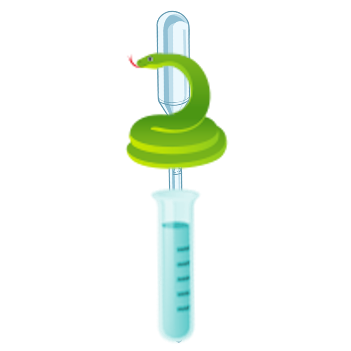

<!DOCTYPE html>
<html lang="pt">

</html>

<head>
    <meta charset="UTF-8" />
    <meta name="viewport" content="width=device-width, initial-scale=1.0" />
    <link rel="stylesheet" href="../styles/defaults.css" />
    <link rel="stylesheet" href="../styles/exames-oferecidos.css" />
    <title>Exames</title>
</head>

<body>
    <header>
        <a class="logo" href="../index.html"
				></a>
        <h1 class="title">Exames Realizados Pelo LevidebadLab</h1>
    </header>
    <main>
       <nav>
			<ul>
				<li class="dropdown">
					<a href="../index.html">Início</a>
				</li>
				<li class="dropdown">
					<span class="dropbtn">Exames</span>
					<ul class="dropdown-content">
						<li>
							<a href="exames-oferecidos.html"
								>Exames oferecidos</a
							>
						</li>
						<li><a>Fazer agendamento</a></li>
						<li><a>Consultar resultados</a></li>
					</ul>
				</li>
				<li class="dropdown">
					<a href="./about.html">Sobre Nós</a>
				</li>
			</ul>
		</nav>
        <section class="container">
            <article>
                <h2>
                    Exames Oferecidos
                </h2>
            </article>
            <section class="card">
                <h4 class="card-title">Hemograma Completo</h4>
                <p>
                    Hemograma é um exame que avalia as células sanguíneas de um
                    paciente, ou seja, as da série branca e vermelha, contagem de
                    plaquetas, reticulócitos e índices hematológicos.
                    Prazo médio até 48 horas
                    Preço: R$ 1,77
                </p>
            </section>
            <section class="card">
                 <h4 class="card-title">Parcial de Urina</h4>
                </br>
                <p>
                    O exame de urina é o teste que analisa características físicas, 
                    químicas e microscópicas desse fluido corporal. 
                    Ele serve tanto para verificar a saúde do sistema 
                    urinário quanto para investigar diversos tipos de alteração no organismo.
                    Prazo médio até 48 horas
                    Preço: R$ 3,50
                </p>
            </section>
            <section class="card">
                 <h4 class="card-title">Glicemia em Jejum</h4>
                <p>
                    O exame de glicemia em jejum serve para medir o nível da glicose na circulação sanguínea do paciente.
                    É necessário estar de 8 a 12 horas de jejum, sem consumir nenhum tipo de alimento ou bebidas,
                    apenas água é permitido. 
                    O exame é utilizado para investigar possíveis casos de diabetes e para controle da doença.
                    Prazo médio até 48 horas
                    Preço: R$ 0,68
                </p>
            </section>
            
        </section>
    </main>
    <footer>
			<p>
				💖 Agradecemos a <a href="https://www.pexels.com">Pexel</a> e
				aos seguintes artistas pelas mídias, em ordem de utilização:
			</p>
			<ul>
				<!-- <li>
					<a href="https://www.pexels.com/@edward-jenner">
						Edward Jenner</a
					>
				</li> -->
				<li>
					<a href="https://www.pexels.com/@rethaferguson"
						>RF._.studio
					</a>
				</li>
				<li>
					<a href="https://www.pexels.com/@elina-sazonova"
						>Elina Sazonova</a
					>
				</li>
			</ul>
			<p class="copyright">&copy; 2020 LevidebadLab</p>
		</footer>
</body>

</html>